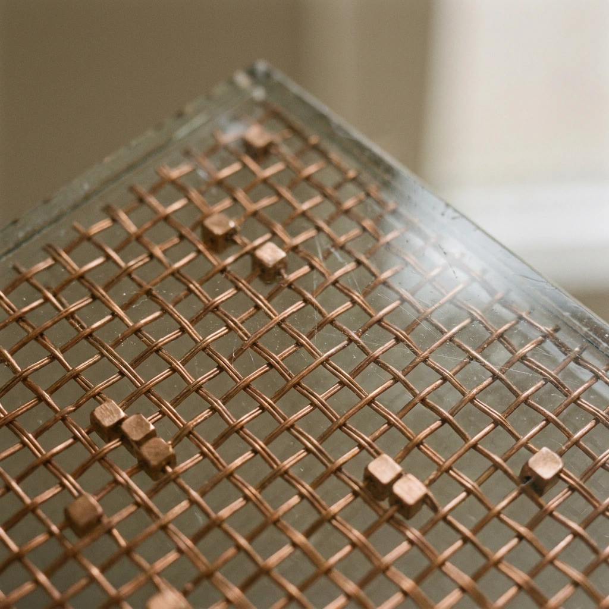
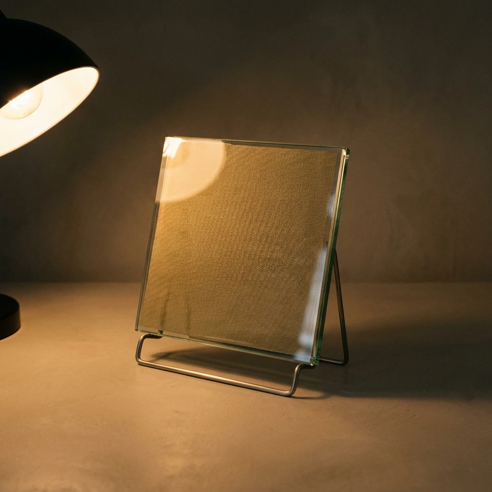
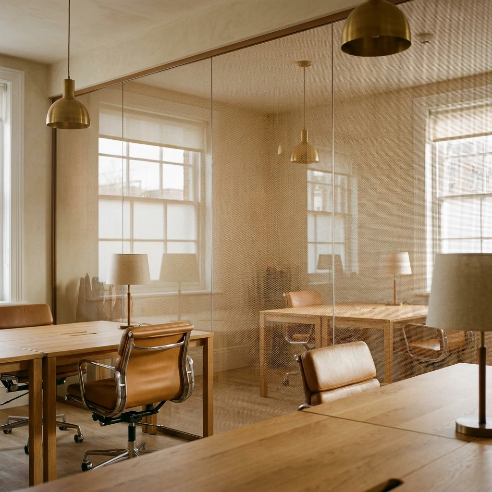

Glass Lab — Laboratorio de vidrio · Panama
Cada vidrio es un especimen.
53 formulas catalogadas — colores, inserciones, texturas y reflectivos, laminados a medida.

Ficha tecnica — AR-0033 · SA-Qubo
Datos objetivos, intuicion material.
Parametro
Valor
Composicion
Laminado 6 + 6 mm
Insercion
Malla dorada SA-Qubo
Transmision de luz
78%
Formato maximo
2.40 × 3.60 m

Muestra №004
Vista macro ×2

Camara de luz — ensayo №07
La luz es el instrumento. El vidrio solo la conduce.
Vidrio decorativo y arquitectonico — laminado en PanamaUn espectro de materia
Cinco familias · 53 formulas · laminado a medida
Manifiesto · 01/06
Glass Lab — Panama
El vidrio no es un producto. Es un sistema.
Profundidad, textura y luz: cada tipo se rige por datos objetivos y se evalua mediante criterios sensoriales. Lo que no puede verse se estudia, se estructura y se hace materia.

Materia. Luz. Precision. — Glass Lab
Proceso — laminado por capas
00:08 loop
Fabricacion propia — Panama · estandar internacional